Le développeur web
Il s’occupe de la partie technique des sites Internet. A la demande d’un
client ou d’une entreprise et sur base d’un cahier des charges, il conçoit des sites sur
mesure ou adapte des solutions techniques existantes. Spécialiste des langages informatiques, il prend en charge l’ensemble des fonctionnalités du site, son architecture, l’accès aux données ainsi que l’écriture des lignes de codes contenant du texte, du son et des images.
Pour certains projets, il arrive que les délais de lancement soient très courts et que des
arrangements de dernière minute apparaissent. Le développeur web doit donc être rapide et réactif. Avant de mettre le site en ligne, il réalise une série de tests pour s’assurer du bon fonctionnement du système. Il rédige les manuels notices techniques d’installation et d’exploitation pour les utilisateurs ou les forme directement à l’emploi des nouvelles fonctionnalités.
Perçu comme étant le seul à maîtriser parfaitement les contraintes techniques, le développeur
assure également la maintenance et les développements ultérieurs du site. Dès qu’un problème
technique survient, il le corrige. Les technologies évoluant très vite dans ce domaine, ce
professionnel doit actualiser et compléter sans cesse ses connaissances en langages de
programmation, logiciels, et matériels.
Formations recommandées pour la pratique de ce métier (liste évolutive)